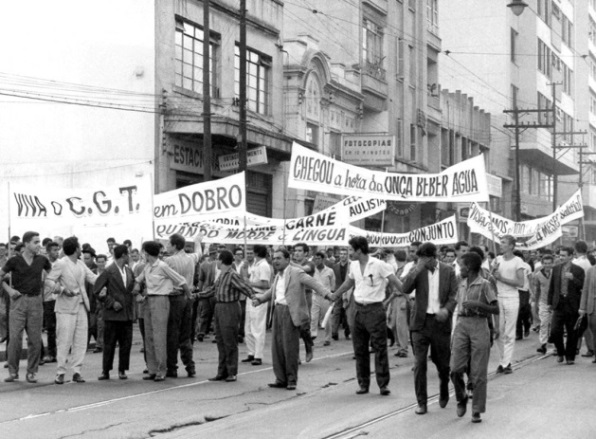

Lei n.º 4330, de 1° de junho de 1964 - A Lei de greve que substituiu a Lei de Greve de 1946.
A lei de greve promulgada durante o regime civil-militar representou uma barreira de difícil transposição para os trabalhadores. As criações de diversas exigências burocráticas praticamente impossibilitavam a realização de paralisações legais. Foram proibidas as greves que fossem deflagradas “por motivos políticos, partidários, religiosos, sociais, de apoio ou solidariedade”, limitando-as às exigências que sejam estritamente ligadas as relações de trabalho específicas de cada categoria. Esse texto substituiu a Lei de Greve de 1946, que apesar de também prever dispositivos que impunham restrições ao exercício grevista, carecia de legislação complementar, fazendo com que esse direito fosse exercido, de certa forma, livremente nos 20 anos anteriores ao golpe.